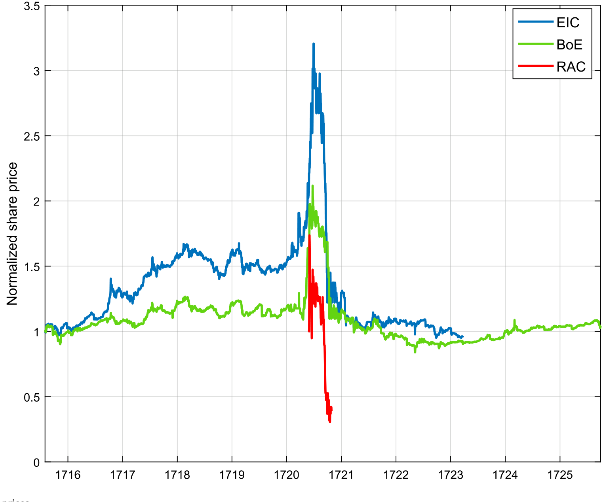
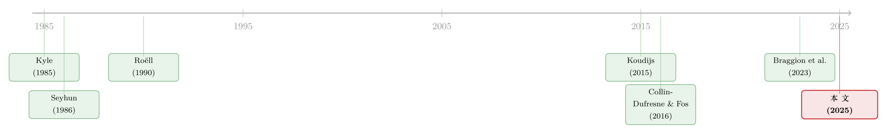

十八世纪的「内幕交易」：当你不知道自己正在和董事做对手盘
本文读的是 Cosemans & Frehen (2025, JFE)：在一个没有任何内幕交易禁令、且交易非匿名的市场里——十八世纪初的伦敦股市——作者手工还原了三家公司所有人的每一笔买卖。他们发现，内幕人（董事）会藏起自己的身份、挑准时机下手，被匿名化的内幕交易在随后一个月比未匿名的多赚 1.7%；而坐在对手盘的外部人，无论老手新手，都要为此付出可被精确计量的预期损失。
1 一个几乎无法回答的问题
内幕交易能赚多少钱？这个问题听上去简单，却几乎是实证金融里最难干净作答的一个。
原因有两层。第一层是数据的层面：在今天的市场里，我们根本分不清哪些是「知情交易」，哪些是「噪声交易」。美国的 Form 4 要求董事、高管、10% 以上的大股东在两个工作日内申报自己的买卖，但这些申报里既有基于私有信息的「机会型」交易，也有为了流动性、税务、分散化而做的「例行」交易，混作一团（关于「申报」这道筛子本身会漏掉谁，可参见《雷达之下：不必申报的高管，在自家股票上赚了多少？》）。第二层是法律的层面：内幕交易在大多数国家是违法的，于是我们能观测到的「内幕交易」要么是合法申报的那一小撮，要么是被 SEC 抓出来起诉的那一小撮——后者更是带着严重的选择偏差。Augustin et al. (2019) 发现，在他们样本里有知情期权交易的并购案中，SEC 只对其中 10% 提起了诉讼；Blackburne et al. (2021) 则指出大量 SEC 调查从未公开。被起诉的交易往往更赚钱，因为「更赚钱」恰恰是检方用来证明「这笔交易基于私有信息」的弹药。
所以，几乎所有研究都只能从内幕人自己的视角，去估计他赚了多少。一个更要命的盲区是：没有人去问对手盘。当内幕人赚了 3%，这 3% 是从谁兜里掏出来的？那些和他做对手盘的外部人，到底亏了多少？现代数据里，你连「谁和谁成交」都看不到，这个问题根本无从下手。
于是一个自然的念头是：有没有一个市场，既没有内幕交易禁令（这样内幕人会肆无忌惮地用信息，我们能看到信息的真实价值），又能让我们看到每一笔交易的买卖双方身份（这样我们能算出对手盘的损益）？
听起来像是天方夜谭。但本文两位作者真的找到了这样一个市场——只不过它在三百年前。
2 把账本一页页抄回来：十八世纪的伦敦股市
时间回到 1719–1720 年的伦敦。那是南海泡沫 (South Sea Bubble) 的前夜。当时的伦敦股市只有寥寥几只大盘股：英格兰银行 (Bank of England, BoE)、东印度公司 (East India Company, EIC)、南海公司、百万银行、皇家非洲公司 (Royal African Company, RAC)。1720 年泡沫破灭后，幸存下来的还是这同一批老股票，外加两家新成立的保险公司。
作者锁定了其中三家——英格兰银行、东印度公司、皇家非洲公司——它们按泡沫前市值合计占了超过 40% 的市场。为什么是这三家？因为只有它们的过户账本 (ledger books) 和过户文件 (transfer files) 留存了下来。
这里要停下来体会一下这套数据有多奢侈。在那个时代，买卖股票不是点一下鼠标：买方和卖方必须本人到公司的过户办公室，在过户簿上签字、一手交钱一手交股。换句话说，交易天然是非匿名的——你看得见你的直接对手是谁。过户员把每一笔交易都记进账本，而且记了不止一遍（买方账户、卖方账户、过户文件里各记一次），作者因此能交叉核对、保证数据质量。每个交易者还有一个唯一的「账本索引」，记着他的住址、职业、头衔——「来自伦敦伦巴第街的呢绒商 John Smith」。
更妙的是第二份数据：作者把这三家公司所有董事会会议纪要 (board meeting minutes) 也挖了出来。每份纪要开头都列着当天到会董事的名字（如图 2 所示，那是英格兰银行 1719 年 10 月 8 日董事会的出席名单），正文则记录着当天讨论的核心议题——银行董事会聊的是贷款和还款，另两家聊的是殖民地动态、商船与货物的到港。谁在哪一年坐在哪家公司的董事会里，由此一清二楚。 这就给了作者一个干净的「内幕人」定义：某人在某公司董事会任职的那些年，他对这家公司就是内幕人 (insider)；同一个人，在他没任职的年份、或对另一家公司，就是外部人 (outsider)。

Figure 1: Normalized share prices
第三份数据是报纸 Castaing's Course of the Exchange，它每天刊登股价。三份数据拼在一起，作者就拥有了一样现代研究者做梦都得不到的东西：一个市场里所有人、所有股票、每一天的全部持仓与成交，以及每笔成交的对手是谁、那一天董事会里在密谈什么。
3 第一步：私有信息到底值多少钱？
有了这套数据，作者的叙事是层层递进的。
首先，得证明董事手里确实握着有价值的私有信息。作者把那些「先在董事会上被讨论、后来才见诸报端」的公司大事件挑出来，去看董事们在消息公开之前的动作。结果很干净：在利好新闻发布前，董事们异常地大量买入；在利空发布前，则异常地大量卖出。而股价呢？在这些消息于董事会被讨论后的五天内，平均朝着消息的方向移动了 4.5%。
私有信息是真金白银。这一步坐实了。
接着，一个自然的问题是：既然内幕人有信息优势，那他们的交易业绩，是不是就该系统性地高于外部人？
作者的做法是把「交易者-公司」层面的事后回报 (post-trade return) 对一组「内幕交易虚拟变量」回归。结论是：内幕人事后回报显著高于外部人，每笔交易在月度与季度horizon上分别高出 1.5% 到 3%，而且这个差距主要由买入驱动。
这里有个绝妙的稳健性检验，恰恰是这套数据独有的。你可能会说：董事跑赢外部人，会不会只是因为董事这群人本来就更会投资（更高的金融素养、更强的择股能力），而跟「信息」无关？作者的回答是:因为我们还观测到同一位董事在「他不是内幕人的那些公司」股票上的交易，所以我们可以放进交易者固定效应 (trader fixed effects)，把这个人的一切不可观测的个人能力统统吸收掉。加了固定效应后，业绩差距依然在。也就是说——董事跑赢，不是因为他更聪明，而是因为他知道得更多。
为了不漏掉「非董事但同样可能知情」的人，作者还把内幕人的范围扩大到大股东、经纪人、雇员、董事的邻居、贵族、政客。这些「潜在内幕人」的事后回报也显著高于外部人，但普遍不如董事——尤其在季度horizon上。最有价值的信息，集中在董事手里。
4 真正关键的一步：他们怎么「藏」和「等」
到这里，故事还停留在「内幕人赚得多」。但本文真正的贡献，是把微观结构理论里两个最经典的预测——藏身份和择时机——第一次拿到一个非匿名市场里做了直接检验。
先说「藏身份」。 一大批理论（Roëll, 1990；Admati and Pfleiderer, 1991；Fishman and Longstaff, 1992 等）都预测：知情交易者偏好在透明度更低的场所交易，以降低价格冲击。可问题是，本文研究的市场是非匿名的——买卖双方当面交割，而且谁是董事是公开信息。那董事还怎么藏？
作者发现了一条精巧的暗道：董事可以通过一个中间商来反向平掉自己的交易。比如一位董事想悄悄卖出，他先把股票卖给中间商，中间商转手再卖给某个外部人。这个外部人看得见自己的直接对手是中间商，却不知道这个中间商是在替一位董事接盘卸货。于是外部人在毫不知情的情况下，间接地和内幕人做了对手盘。
这正是本文那个聪明的「藏身份」测度：如果一笔交易的对手方随即反向做了一笔抵消交易，就把它标记为「策略性隐藏 (strategically hidden)」。直觉是：越是基于私有信息的交易，内幕人越有动机去伪装它。
如果这套逻辑成立，那么被匿名化的内幕交易就该比未匿名的更赚钱。数据说：董事被匿名化的交易，在随后一个月（一季度）比他未被匿名化的交易多赚 1.7%（0.7%）。 内幕人确实在用私有信息时主动隐藏身份。
再说「等时机」。 Collin-Dufresne and Fos (2016) 在 Kyle (1985) 的框架上做了一个关键扩展：让噪声交易变成随机的，于是模型预测——当一只股票的噪声交易量、流动性更高时，掌握长寿命信息的知情者会更激进地交易，因为这时候他的单子更容易藏进噪声里，价格冲击更小。
本文怎么检验？作者用前面那个「匿名度」当作交易是否知情的事前代理，于是可以把董事的交易切成「知情」和「不知情」两组，分别去看它们对噪声交易量的反应：
- 对于知情交易：未知情交易量每上升一个标准差，知情董事成交的股数就增加约
20%。 - 对于不知情交易：董事的成交量与噪声交易量之间，没有任何关系。
这个对比至关重要。它排除了一种平庸的解释——「董事不过是只要流动性好就多交易，跟知情不知情无关」。不，董事只在用信息时才追着流动性下手。
然后是择时的回报。 既然是在挑时机，那挑准了时机的交易就该更赚。数据：当一只股票的未知情交易量比均值高一个标准差时，董事在那天的交易，比他在「平均交易量日」的交易，月度多赚 1%、季度多赚 5%。 注意，更长horizon上更赚，这本身就印证了理论的另一半——只有当私有信息是长寿命的，「等」才划算。而且这个对比同时帮作者堵住了「董事是靠择股天赋而非信息赚钱」的质疑：择时交易更赚，恰恰说明驱动力是信息的时机价值。
5 于是反转出现：那对手盘，到底亏了多少？
走到这一步，所有现代研究都会停下——因为它们看不到对手盘。但本文最独特的贡献，恰恰是把镜头调转 180 度，对准那个倒霉的外部人。
一个尖锐的问题先得回答：既然内幕人这么会赚，市场又不是匿名的，外部人为什么还愿意和他们交易？ 答案前面已经埋好了——因为董事会藏。外部人看得见自己的直接对手，也知道谁是董事，所以有经验的外部人会主动躲开董事；但当董事通过中间商把自己藏起来时，外部人就防不住了。
作者于是把外部人的预期损失 (expected loss) 拆成一道干净的乘法：
$$ \text{Expected Loss} = \Pr(\text{trade with insider}) \times \overline{\text{Loss} \mid \text{trade with insider}} $$
其中「平均损失」定义为：外部人和董事成交后的平均事后回报，减去他和另一个外部人成交后的平均事后回报。两个量都直接可观测，因为账本告诉了我们每笔交易的对手是谁。
结果是这样的：
- 和董事做对手盘，外部人每笔交易在随后一个月（一季度）的预期损失是
2（7）个基点 (basis points)。 - 作为对照，当时的经纪佣金是每笔
25个基点——也就是说，和内幕人做对手盘的「隐性税」，比明面上的佣金要小得多。 - 但如果把内幕人的范围扩大到前任/未来董事、大股东、经纪人、雇员、邻居、贵族、政客，预期损失就上升到月度
14、季度25个基点。 - 若进一步只算知情的内幕交易（同时满足「被策略性隐藏」且「事后回报超过某阈值」），在阈值取零时，损失为月度
2、季度4个基点；扩大内幕人范围后升到13（月度）、27（季度）个基点。
一个反直觉的细节：当你提高「知情」的回报阈值时，外部人的预期损失反而变小。原因藏在那道乘法里——阈值越高，单笔知情交易确实越赚（平均损失项变大），但你撞上这种交易的概率掉得更快，两者相乘，后者占了上风。
最后一层，作者问：到底是哪类外部人更容易踩坑？答案符合直觉但很重要：交易经验更丰富、对市场理解更深的外部人，更不容易直接和董事成交；而且在董事最可能利用信息优势的日子——董事会开会日、噪声交易量高的日子——这些老手躲得更远。但请注意那个无法回避的尾巴：一旦董事选择策略性地藏起身份，无论老手还是新手，都一样会被割。 经验能帮你认出明面上的董事，却认不出藏在中间商背后的那一个。
6 文献脉络
把这篇论文放回它所在的谱系里，会看得更清楚。
这条线的理论源头是 Kyle (1985)——连续拍卖与内幕交易的奠基模型，它告诉我们知情者会把交易摊薄到时间上以隐藏信息。紧接着，一批微观结构理论（Roëll, 1990；Admati and Pfleiderer, 1991 等）转向匿名性：知情者偏好不透明的场所以压低价格冲击。Collin-Dufresne and Fos (2016) 则把 Kyle (1985) 推进一步——让噪声交易随机化，预测知情者会在流动性高时更激进，并在 Collin-Dufresne and Fos (2015) 用 13D 举牌数据找到了经验证据。
实证这一侧，Seyhun (1986) 用事件研究法发现申报内幕交易后有显著超额回报；但 Cohen et al. (2012)、Ali and Hirshleifer (2017) 进一步指出，只有机会型交易才真正赚钱，例行交易并不。这些研究的共同短板，是只能从内幕人一侧、且只能在合法申报的窗口里看问题。

金融史这一侧，Koudijs (2015) 同样用十八世纪的数据（阿姆斯特丹），验证了 Kyle (1985) 的「摊薄交易」预测；Braggion et al. (2023) 则用南海泡沫期的信贷与持股数据，揭示了抵押融资如何助推泡沫。本文正好站在这三股力量的交汇点：它借金融史的全样本、非匿名、无禁令之利，第一次同时检验了「藏身份」与「择时机」两个理论预测，并把视角延伸到前人够不着的对手盘。
7 评论与延伸（Q&A + 研究方向）
(a) 几个可能的疑问
Q：用「对手方随后反向平仓」来定义『策略性隐藏』，会不会把普通做市商的正常存货管理也误判成内幕伪装？
会有这个风险，这也是该测度最值得商榷之处。作者的辩护是间接的：被这样标记的交易事后回报系统性更高（月度多
1.7%），且其成交量只对知情交易响应噪声交易量、对不知情交易毫无反应。如果它纯粹捕捉的是做市商存货行为，不该有这种「只在知情时才出现」的不对称。但严格说，这是一个事前代理而非干净的标签，结论应理解为「与策略性隐藏一致」，而非铁证。
Q：与现代「机会型 vs 例行型」内幕交易（Cohen et al., 2012）相比，本文的『知情 vs 不知情』切法新在哪？
Cohen et al. (2012)是用交易的历史规律性（每年固定月份买入＝例行）来事后分类，本质上是行为模式的统计。本文则用匿名化行为这个事前可观测的策略选择来分类，并且能用董事会纪要这个信息事件的直接源头去外部验证。前者推断「这人像不像在用信息」，后者更接近「这笔交易背后到底有没有信息」。
Q：每笔仅 2–7 个基点的外部人损失，是不是小到无关紧要？
单笔确实小——还不到佣金（25 bps）的零头。但这恰恰是本文一个克制而诚实的发现：在一个信息高度集中于少数董事、且董事会主动藏匿的市场里，分摊到每个外部人头上的「内幕税」其实有限。真正的政策含义不在量级，而在结构：损失高度集中在「撞上被藏起来的知情交易」这一小概率事件上，且老手也躲不开。
Q：交易者固定效应真能干净地剥离『能力』与『信息』吗？
这是本文识别的精华，也是其软肋。它依赖一个假设：同一个人的「投资能力」在他作为内幕人和外部人时保持不变。但若董事在自己任职的公司里不仅信息更多、注意力也更集中（更勤于盯盘），那固定效应吸收不掉这部分「公司特定的努力」，它会被错算进「信息」。作者用「择时交易更赚」来侧面支持信息渠道，但这一缝隙原则上仍在。
Q：三百年前、三家公司的结论，能外推到今天的市场吗？
要谨慎。本文的价值在于提供一个无禁令、非匿名、全样本的「干净实验室」，用来检验理论机制（藏、等、对手盘损失）是否成立——这些是机制性结论，可迁移性较强。但具体量级（1.7%、20%、2 bps）高度依赖于当时的市场结构（少数大盘股、当面交割、信息集中于董事），不宜直接搬到高频、匿名、监管严密的现代市场。
Q：南海泡沫这种极端时期，会不会污染了对「正常」内幕交易的估计？
这是合理的担忧。样本横跨 1715–1725，正好罩住泡沫的形成与破灭，期间流动性、波动率剧烈异常。好处是泡沫期噪声交易量的巨大波动，反而为检验
Collin-Dufresne and Fos (2016)的「择时」预测提供了强识别变异；隐患是事后回报的均值受极端价格走势影响很大。作者的多horizon、多稳健性设计部分缓解了这点，但泡沫这一特殊背景始终是结论的边界条件。
(b) 几个可能的研究问题与提案
1. 把「策略性隐藏」搬到公司债市场
【经济故事】公司债是柜台 (OTC)、关系驱动、极度不透明的市场，交易商网络天然提供了「藏身份」的渠道——一个知情的大持有人完全可以通过交易商链条卸货，让最终对手浑然不觉。本文的「对手方反向平仓＝隐藏」逻辑，在债券市场可能比股票市场更贴切。 【可行性】中。
TRACE能看到成交但看不到交易对手身份，这是硬伤；需要拿到含交易对手的监管版 TRACE 或单家交易商的内部 blotter。识别上可借鉴本文「知情 vs 不知情」的事前/事后双重标记。数据是主要瓶颈。
2. 外资持有人是不是「天然的外部人」？
【经济故事】本文揭示，老手能认出董事、躲开内幕，新手不能。把这条逻辑搬到跨境场景：外国机构投资者在信息、语言、关系网络上天然处于劣势，是否系统性地更常和本地知情者做对手盘、承受更高的「内幕税」？这能给「本地偏好之谜」一个微观结构的解释。 【可行性】中高。可用含交易对手国别的交易级数据（如某些新兴市场交易所的会员级数据）做。识别：比较外资 vs 本地机构在「知情事件窗口」前后的对手盘损益差。难点是界定「本地知情者」。
3. 流动性高时，内幕税是被摊薄还是被放大？
【经济故事】本文发现知情者专挑流动性高的日子下手。那么对外部人而言，「流动性好」究竟是福是祸？一方面成交成本低，另一方面你更可能在这天撞上一个藏好的知情者。把外部人预期损失对流动性状态做条件估计，能直接回答这个张力。 【可行性】高。本文数据本身就够做（按噪声交易量分组重估外部人损失），是对其框架的自然延伸；用现代含对手身份的数据复制则属上一条的子问题。
4. 董事会日历作为一个外生的「信息时钟」
【经济故事】本文用董事会开会日识别知情交易的时机。可以把它推广成一个一般化工具：用例会日程的外生性（会期是预定的，不由市场内生决定）作为信息释放的时钟，去识别各类知情交易的强度与价格冲击。 【可行性】高（历史数据）／中（现代）。现代上市公司董事会日程多不公开，但可用财报发布日、董事会换届公告日等近似。识别清晰，关键看能否拿到高频日程。
8 我的判断
这篇文章最大的贡献，不在某个惊人的系数，而在它重构了一个几乎不可能存在的观测条件：无禁令、非匿名、全样本、带对手身份。正是靠这套条件，它把微观结构理论里两个长期只能间接检验的预测——知情者会藏身份、会等时机——第一次拿到了直接、且互相印证的证据，更难得的是把视角延伸到了从来没人量过的对手盘。董事会纪要作为信息事件的「源头」、交易者固定效应作为「能力 vs 信息」的剥离器，都是这套数据独有的、设计得很漂亮的杠杆。
我对识别的主要担忧有三点。其一，「策略性隐藏」终究是一个事前代理而非干净标签，它和做市商正常存货行为的边界是模糊的，结论应读作「与隐藏一致」。其二，交易者固定效应假设个人能力跨公司不变，但公司特定的注意力/努力可能混进「信息」这一项里。其三，样本正罩着南海泡沫，量级估计的外部效度受这一极端背景约束。
后续我最想看到的，是把这套「对手盘视角」搬到一个现代、但能看到交易对手身份的市场里去——尤其是 OTC 的公司债与跨境持有场景。如果「藏身份、躲老手、割新手」这组机制在那里也成立，那么本文就不只是一段精彩的金融史，而是一把能用来重新审视当下市场公平性的尺子。
参考文献
- Admati, A., Pfleiderer, P. (1991). Sunshine trading and financial market equilibrium. Review of Financial Studies 4, 443–481.
- Ali, U., Hirshleifer, D. (2017). Opportunism as a firm and managerial trait: Predicting insider trading profits and misconduct. Journal of Financial Economics 126, 490–515.
- Augustin, P., Brenner, M., Subrahmanyam, M. (2019). Informed options trading prior to takeover announcements: Insider trading? Management Science 65, 5697–5720.
- Blackburne, T., Kepler, J., Quinn, P., Taylor, D. (2021). Undisclosed SEC investigations. Management Science 67, 3403–3418.
- Braggion, F., Frehen, R., Jerphanion, E. (2023). Credit provision and stock trading: Evidence from the South Sea Bubble. Journal of Financial and Quantitative Analysis, forthcoming.
- Cohen, L., Malloy, C., Pomorski, L. (2012). Decoding inside information. Journal of Finance 67, 1009–1043.
- Collin-Dufresne, P., Fos, V. (2015). Do prices reveal the presence of informed trading? Journal of Finance 70, 1555–1582.
- Collin-Dufresne, P., Fos, V. (2016). Insider trading, stochastic liquidity, and equilibrium prices. Econometrica 84, 1441–1475.
- Cosemans, M., Frehen, R. (2025). Strategic insider trading and its consequences for outsiders: Evidence from the eighteenth century. Journal of Financial Economics 164, 103974.
- Fishman, M., Longstaff, F. (1992). Dual trading in futures markets. Journal of Finance 47, 643–671.
- Koudijs, P. (2015). Those who know most: Insider trading in eighteenth-century Amsterdam. Journal of Political Economy 123, 1356–1409.
- Kyle, A. (1985). Continuous auctions and insider trading. Econometrica 53, 1315–1336.
- Roëll, A. (1990). Dual-capacity trading and the quality of the market. Journal of Financial Intermediation 1, 105–124.
- Seyhun, N. (1986). Insiders' profits, costs of trading, and market efficiency. Journal of Financial Economics 16, 189–212.